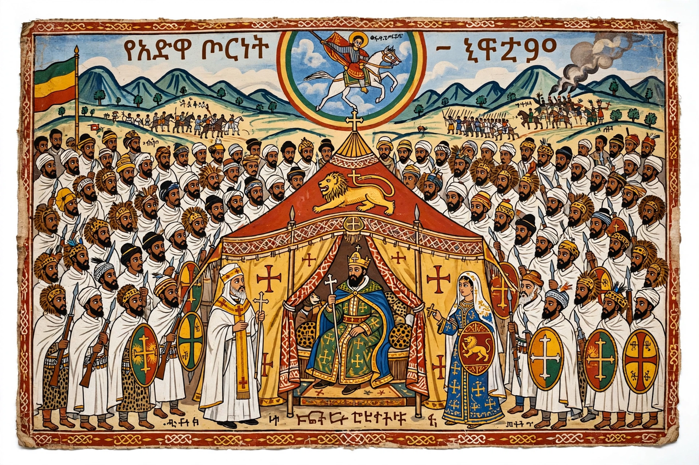

Battle of Adwa
From Wikipedia, the free encyclopedia

The Battle of Adwa (1 March 1896) was the climactic battle of the First Italo-Ethiopian War, in which the Ethiopian Empire under Menelik II decisively defeated an invading Italian army near the town of Adwa in Tigray. The victory secured Ethiopian sovereignty — making Ethiopia, with Liberia, one of the two African states to survive the Scramble for Africa — and became an enduring symbol of African resistance to colonialism.
Background
Italy, established in Eritrea, exploited the disputed Treaty of Wuchale (1889), whose Italian text made Ethiopia a protectorate while the Amharic text did not. Menelik II abrogated the treaty and mobilised a national army of perhaps 100,000, remarkably well armed with modern rifles and artillery bought from France and Russia. General Oreste Baratieri, under pressure from Rome, advanced into the Adwa mountains with about 17,000 troops in separated brigades.
The battle
On the night of 29 February – 1 March, Baratieri's columns blundered through broken terrain into the Ethiopian host; by midday the brigades were destroyed piecemeal. Italian and askari losses were catastrophic — some 5,000–7,000 dead, thousands captured — the worst defeat of a European army in colonial Africa. Ethiopian losses, perhaps 4,000–7,000 killed, were comparably heavy, but the victory was total.
Consequences
The Treaty of Addis Ababa annulled Wuchale and recognised Ethiopian independence; Italy kept Eritrea. Adwa reverberated worldwide — celebrated across the African diaspora, emulated by later liberation movements, and commemorated in Ethiopia each 2 March (Adwa Victory Day); a grand Adwa memorial and museum opened in Addis Ababa in 2024. Italy's revenge came only in 1935–36 under Mussolini, with poison gas, and was reversed by 1941.